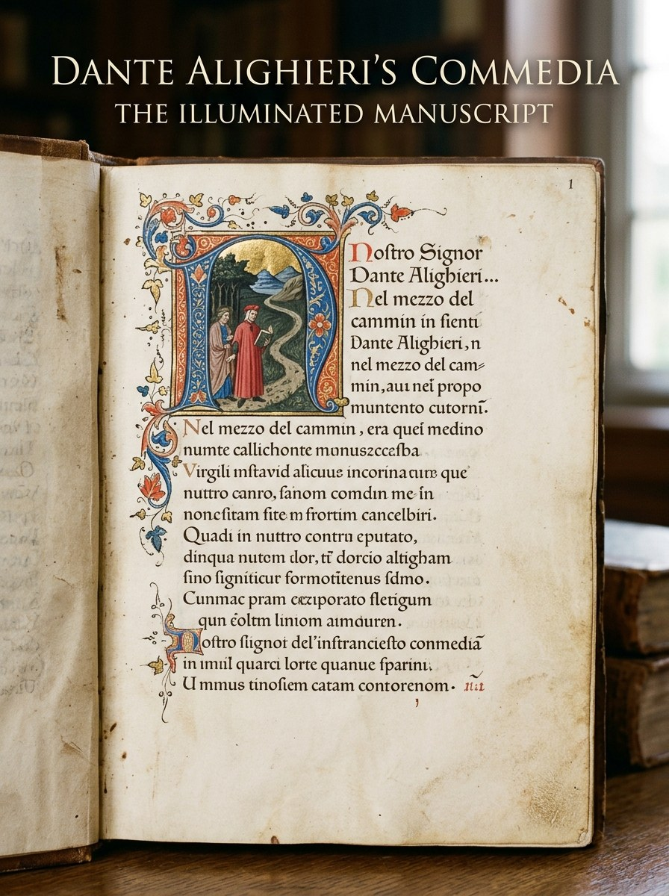

Filologia italiana · Codicologia
All’origine della Commedia. Il manoscritto Urb.Lat.378 e la catalogazione su Manus Online
Dall’analisi materiale del codice membranaceo alle miniature della bottega di Pacino di Bonaguida e alla grafia del «Copista di Pr»: note di laboratorio per il censimento filologico dei testimoni danteschi.

Incipit dell’Inferno
Miniatura di Pacino di Bonaguida, stemma Alighieri e scrittura del Copista di Pr.
Apri su DigiVatLib ↗ Carta 31r · PurgatorioIncipit del Purgatorio
Iniziale istoriata in oro, fregio a racemi e partizione bicolonnare a quinioni.
Apri su DigiVatLib ↗ Carta 61r · ParadisoIncipit del Paradiso
Grande iniziale di cantica, terzine allineate e iniziali filigranate in rosso e blu.
Apri su DigiVatLib ↗ Carta 93v · GuardiaPetrarca in lapis
Trascrizione trecentesca del sonetto CCCXXII («Rotta è l'alta colonna») e nota di possesso.
Apri su DigiVatLib ↗Prendere contatto con un manoscritto trecentesco della Commedia significa interrogare la letteratura nel momento esatto in cui prende corpo: non attraverso l’astrazione rassicurante di un testo a stampa moderno, ma attraverso l’odore della pergamena, il ritmo della rigatura a secco o a colore, le oscillazioni dell’inchiostro e le esitazioni della penna. Questo progetto nasce all’interno del laboratorio di Filologia Italiana II tenuto dal prof. Giancarlo Ferrante all’Università di Napoli Federico II, con l’obiettivo di redigere la scheda scientifica per Manus Online — la banca dati dell’ICCU che censisce il patrimonio manoscritto conservato nelle biblioteche italiane ed ecclesiastiche.
L’esemplare affidatomi per lo studio è uno dei più affascinanti testimoni della tradizione dantesca antica: il codice Urb.Lat.378, custodito nel fondo urbinate della Biblioteca Apostolica Vaticana, databile al secondo quarto del Trecento (1325-1350) e riconducibile alla più precoce ricezione fiorentina del poema.
I. L’archeologia del testo: il censimento dantesco
La storia della filologia dantesca è indissolubilmente legata alla pratica del censimento. Già nella prima metà dell’Ottocento, con la pionieristica Bibliografia dantesca del visconte Paul Colomb de Batines (1845), gli studiosi compresero che per ricostruire il testo di Dante era necessario rintracciare ogni singola testimonianza superstite. In quegli stessi decenni Karl Lachmann formalizzava il metodo genealogico e stemmatico: catalogare non è un mero atto burocratico, ma il prerequisito indispensabile per comprendere le famiglie di copie, gli errori congiuntivi e le ramificazioni della tradizione.
La Commedia conta quasi ottocento manoscritti noti, ma solo una frazione risale ai primi decenni successivi alla morte di Dante (1321). Inserire un manoscritto in Manus Online richiede una catalogazione a doppio binario: da un lato l’esame codicologico (materia, fascicolazione, rigatura, specchio di scrittura, legatura, storia del manufatto), dall’altro l’esame paleografico e testuale (individuazione delle mani, classificazione della scrittura, rubriche, incipit, explicit e lacune).
II. La struttura materiale dell’Urb.Lat.378
Il codice è un volume di formato monumentale (mm 350 × 245), composto da 93 carte membranacee rilegate tra due guardie iniziali e due finali. L’architettura dei fascicoli rivela un impianto programmatico studiato con assoluta regolarità:
- Fascicoli 1–3 (cc. 1–30): tre quinioni (5 bifogli) contenenti l’Inferno.
- Fascicoli 4–6 (cc. 31–60): tre quinioni contenenti il Purgatorio.
- Fascicoli 7–9 (cc. 61–90): tre quinioni contenenti il Paradiso.
- Fascicolo 10 (cc. 91–93): un ternione contenente i Capitoli in terza rima di Bosone da Gubbio e Jacopo Alighieri.
La perfetta cesura tra fascicoli e cantiche dimostra una pianificazione dell’officina libraria volta a mantenere autonome le tre sezioni del poema. La pagina è impostata su due colonne regolari di 43 righe (42 linee di scrittura), con le iniziali di terzina sistematicamente sporgenti a sinistra rispetto al corpo del verso: un accorgimento visivo tipico della grande tradizione fiorentina, che permetteva all’occhio del lettore di cogliere all’istante la rima incatenata dantesca.
III. La scrittura: il «Copista di Pr» e i «Danti del Cento»
L’esame paleografico dell’Urb.Lat.378 individua come scriba principale una personalità di primo piano della bottega fiorentina del Trecento: il cosiddetto Copista di Pr, che traccia l’intero testo del poema e i successivi capitoli dottrinali (cc. 1r-93r) in una bastarda cancelleresca fluida, posata e ad alta leggibilità, ascrivibile al gruppo codicologico dei «Danti del Cento».
La leggenda, tramandata da Vincenzio Borghini nel Cinquecento, voleva che un singolo copista avesse trascritto cento copie della Commedia per maritare le figlie con i proventi; le indagini moderne di Gabriella Pomaro e Sandro Bertelli hanno ricondotto l’aneddoto a una realtà storica ben più significativa: l’esistenza a Firenze, tra il 1330 e il 1350, di un’officina coordinata di copisti mercantili e cancellereschi capaci di soddisfare la travolgente domanda di copie del poema.
«Al copista di Pr sono concordemente attribuite altre tre copie della Commedia: il Plut. 40.35 della Laurenziana, l’Italien 539 della Bibliothèque nationale de France e l’It. Z. 50 della Marciana di Venezia.»
Sandro Bertelli, La tradizione della «Commedia»
Accanto alla mano principale si riscontrano due interventi correttori coevi: la Mano 2, in littera textualis semplificata, che a carta 6r integra una terzina omessa a Inf. VII 16-18 («non sanza cagion si va al cupo...»), e la Mano 3, che a carta 56r corregge una variante in Purg. XXIX 62. Il codice testimonia così la viva circolazione del testo, continuamente controllato e confrontato con altri modelli.
IV. L’apparato miniato: la bottega di Pacino di Bonaguida
Il valore artistico dell’Urb.Lat.378 è reso straordinario dal suo corredo decorativo, attribuito dalla critica alla bottega fiorentina di Pacino di Bonaguida, tra i massimi miniatori del primo Trecento toscano. Il progetto figurativo è unitario e gerarchizzato secondo i codici visivi dell’epoca:
- Pagine ornate e iniziali istoriate: le tre carte d’inizio cantica (cc. 1r, 31r, 61r) si aprono con grandi miniature istoriate che ritraggono Dante e il suo viaggio, incorniciate da fregi fitomorfi e zoomorfi popolati da tralci d’acanto, uccelli e figure mostruose.
- Oro in foglia: steso con generosità nei nimbati e nei fondi delle grandi lettere di cantica, a sottolineare il rango nobiliare della committenza.
- Iniziali filigranate: ogni canto è inaugurato da una lettera decorata a penna, alternativamente in inchiostro rosso con filigrana blu e in inchiostro blu con filigrana rossa.
- Rubriche d’autore: tracciate in inchiostro vermiglio, riassumono il contenuto teologico e morale di ciascun canto («Incomincia la Comedia di Dante Alleghieri di Firenze...»).
A carta 1r, nel margine inferiore del fregio, era originariamente presente lo stemma della famiglia Alighieri (scudo partito d’oro e di nero alla fascia attraversante d’argento), oggi visibile solo in luce radente a causa di un’energica rasura medievale operata da un successivo possessore.
V. Il Petrarca a lapis e i secoli del codice
Un manoscritto è anche un diario di letture. Sfogliando le ultime carte dell’Urb.Lat.378, dopo i capitoli in rima di Bosone da Gubbio e di Jacopo Alighieri, la guardia finale (c. 93v) riserva una scoperta emozionante: accanto a un’antica nota di possesso («Iohanni...»), una mano trecentesca ha trascritto a lapis — una grafite primitiva, finissima e quasi invisibile — il celebre sonetto CCCXXII dei Rerum vulgarium fragmenta di Francesco Petrarca:
«Rotta è l’alta colonna e ’l verde lauro
Francesco Petrarca, Canzoniere, CCCXXII (c. 93v)
che facean ombra al mio stanco pensero...»
L’accostamento tra Dante e Petrarca in un codice allestito a Firenze verso il 1340 documenta con precisione quasi archeologica la rapidità con cui le liriche petrarchesche venivano lette, mandate a memoria e appuntate sui margini dei grandi libri di Dante già nella prima metà del secolo.
Il codice giunse poi nella celebre Biblioteca Ducale di Urbino fondata da Federico da Montefeltro, come testimonia la segnatura a matita «Urb. 378», prima di confluire nel 1657 a Roma tra i fondi della Santa Sede. Al dorso della legatura vaticana in pergamena rigida campeggiano ancora, impressi in oro zecchino, i timbri e le armi araldiche di papa Clemente XIV Ganganelli.
Scheda descrittiva sintetica · Manus Online
Esplora il manoscritto digitalizzato
Biblioteca Apostolica Vaticana · 204 immagini in alta risoluzione IIIF
Bibliografia essenziale
- Bertelli, S., La tradizione della «Commedia» dai memoriali bolognesi alle edizioni a stampa (1317-1472), Firenze, Olschki, 2011, pp. 78, 332.
- Boschi Rotiroti, M., Codicologia trecentesca della «Commedia». Entro e oltre l’antica vulgata, Roma, Viella, 2004, p. 84.
- Colomb de Batines, P., Bibliografia dantesca, ossia Catalogo delle edizioni, traduzioni, codici manoscritti e comenti, Prato, Tipografia Aldina, 1845.
- Petrocchi, G., La Commedia secondo l’antica vulgata, Milano, Mondadori, 1966-1967.
- Pomaro, G., I manoscritti danteschi della tradizione fiorentina antica, in Dante: la visione dell’arte, a cura di A. Paolucci, Forlì, 2007, p. 274.
- Roddewig, M., Dante Alighieri, Die göttliche Komödie. Vergleichende Bestandsaufnahme der Handscriften, Stuttgart, Hiersemann, 1984.
- Istituto Centrale per il Catalogo Unico (ICCU), Guida alla catalogazione in Manus Online, Roma, ICCU, 2020.